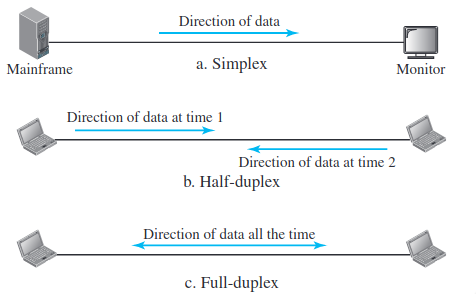

Data Communications & Networks
Table of Contents
Data Communications
- Data communications are the exchange of data between two devices via some form of transmission medium such as a wire cable.
- The effectiveness of a data communications system depends on four fundamental characteristics:
- Delivery - The system must deliver data to the correct destination.
- Accuracy - The system must deliver the data accurately. Data that have been altered in transmission and left uncorrected are unusable.
- Timeliness - The system must deliver data in a timely manner. Data delivered late are useless.
- Jitter - Jitter refers to the variation in the packet arrival time. It is the uneven delay in the delivery of audio or video packets.
Components
- A data communications system has five components.
- Message - The data to be transmitted.
- Sender - The one who sends.
- Receiver - The one who receives.
- Transmission medium - Through which the data is sent.
- Protocol - The set of rules followed during the transmission of data.
Data Representation
- Information today comes in different forms such as:
- Text
- Numbers
- Images
- Audio
- Video
Data Flow
Communication between two devices can be simplex, half-duplex, or full-duplex.

Simplex
- In simplex mode, the communication is unidirectional, as on a one-way street. Only one of the two devices on a link can transmit; the other can only receive.
- Example - Keyboard takes only input and monitor gives only output.
Half-duplex
- In half-duplex mode, each station can both transmit and receive, but not at the same time.
- Example - Walkie-talkies
Full-duplex
- In full-duplex mode (also called duplex), both stations can transmit and receive simultaneously
- Example - Using phone to talk to each other
Networks
A network is the interconnection of a set of devices capable of communication.
Osi and TCI/IP model
What is OSI model?
- The OSI stands for Open System Interconnection, which was developed in 1980s. It is a conceptual model used for network communication. It is not implemented entirely, but it is still referenced today. This OSI model consists of seven layers, they are :-
- Application
- Presentation
- Session
- Transport
- Networks
- Data link
- Physical
- The data moves down the OSI model, and each layer adds additional information. The data moves down until it reaches the last layer of the OSI model. When the data is received at the last layer of the OSI model, then the data is transmitted over the network. Once the data is reached on the other side, then the process will get reversed.
What is TCP/IP model?
- The TCP model stands for Transmission Control Protocol, whereas IP stands for Internet Protocol. A number of protocols that make the internet possibly comes under the TCP/IP model. Nowadays, we do not hear the name of the TCP/IP model much, we generally hear the name of the IPv4 or IPv6, but it is still valid. This model consists of 4 layers. They are :-
- Application
- Transport
- Network
- Internet Access